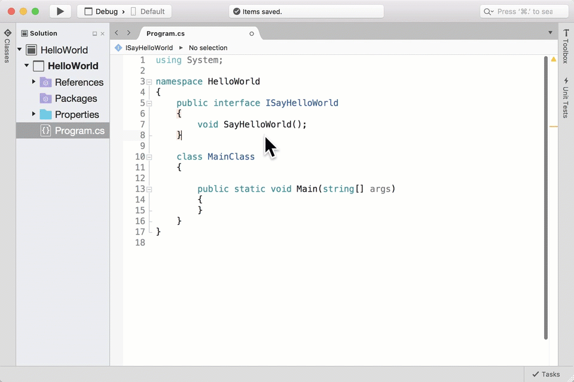
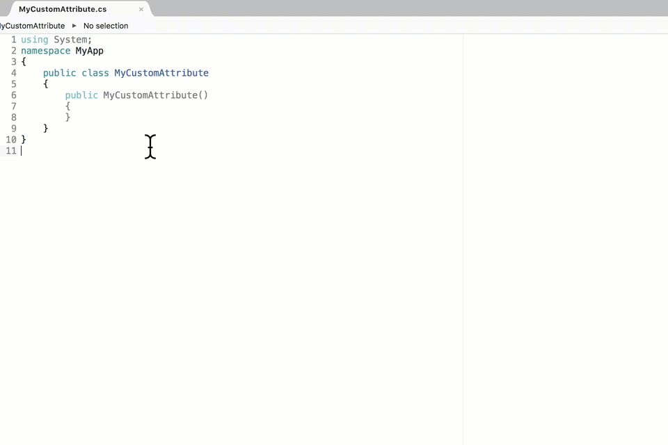
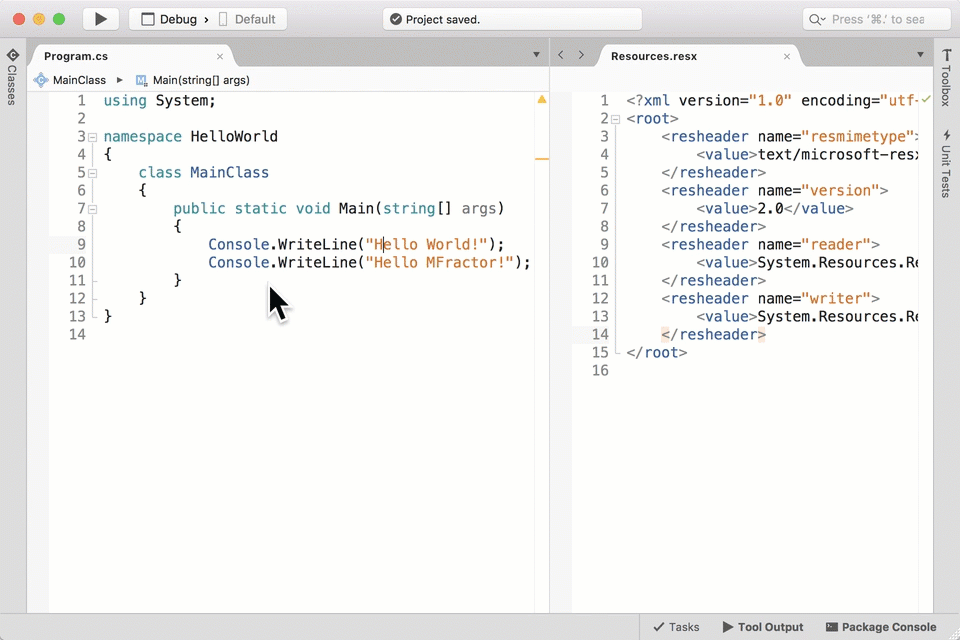

C# Code Actions
Autogenerated by MFractor v3.5.13
Annotate With Attribute Usage
Configuration Id: com.mfractor.code_actions.csharp.annotate_with_attribute_usage
Adds an AttributeUsage annotation to a class that derives directly or indirectly from System.Attribute.

Configurable Properties
| Name | Type | Defaults To | Description |
|---|---|---|---|
| DefaultAttributeUsage | System.AttributeTargets | Class | When creating the attribute usage annotation, what is the default target this attribute should be used on? |
Uses:
Create Immutable Constructor
Configuration Id: com.mfractor.code_actions.csharp.create_immutable_constuctor
This code action creates a constructor that assigns all of a classes readonly fields from constructor arguments
The Create Immutable Constructor code action is useful when building readonly class implementations.
When triggered, the code action collects all readonly fields in a class and builds a constructor that has a parameter that assigns to each readonly field.
Before
public class MyImmutableClass
{
public readonly string MyString;
public readonly int MyInt;
}
After
public class MyImmutableClass
{
public readonly string MyString;
public readonly int MyInt;
public MyImmutableClass(string myString, myInt)
{
MyString = myString;
MyInt = myInt;
}
}
Uses:
Generate Interface Implementation
Configuration Id: com.mfractor.code_actions.csharp.generate_interface_implementation

Creates a new implementation of the selected interface.
Uses:
Go To Implementation
Configuration Id: com.mfractor.code_actions.csharp.go_to_interface_implementation

Shortcut: Option + D
Navigates to the implementation of an interface, abstract class or any members of that interface/abstract class. If there are multiple implementations of this interface/class/member, shows a list of everywhere it is declared.
Implement Base Class Constructors
Configuration Id: com.mfractor.code_actions.csharp.implement_base_class_constructors
When a C# class inherits from a base type that does only has parameterised constructors, this code action will generate each of the base classes parametered constructors.
For example, say a developer wanted to inherit MyCustomView from Android.Views.View to create a custom view in Xamarin.Android; the View class does not have any paramterless contructors.
public class MyCustomView : Android.Views.View // Generates a compiler error as View has no parameterless constructors.
{
}
Using the Implement Base Class Constructors code action against the MyCustomView class would generate the following code.
public class MyClass : View
{
public MyClass(System.IntPtr javaReference, Android.Runtime.JniHandleOwnership transfer) : base(javaReference, transfer)
{
}
public MyClass(Android.Content.Context context) : base(context)
{
}
public MyClass(Android.Content.Context context, Android.Util.IAttributeSet attrs) : base(context, attrs)
{
}
public MyClass(Android.Content.Context context, Android.Util.IAttributeSet attrs, int defStyleAttr) : base(context, attrs, defStyleAttr)
{
}
public MyClass(Android.Content.Context context, Android.Util.IAttributeSet attrs, int defStyleAttr, int defStyleRes) : base(context, attrs, defStyleAttr, defStyleRes)
{
}
}
Uses:
Make Class Inherit From System.Attribute
Configuration Id: com.mfractor.code_actions.csharp.make_class_inherit_from_attribute
When a class declaration ends with Attribute (EG: MyCoolAttribute) and does not derive from any class, this code action will make the class inherit from System.Attribute.

Reduce Fully Qualified Type Name
Configuration Id: com.mfractor.code_actions.csharp.reduce_fully_qualified_type_name
When a type reference is fully qualified, this refactoring inserts a using statement for the types namespace and removes the namespace component of the type.
Replace String With Resource Lookup
Configuration Id: com.mfractor.code_actions.resx.replace_csharp_string_with_resource_lookup

This code refactoring will open the localisation wizard, allowing you to walk through all strings in a C# code file and replace inline strings with resource lookups.